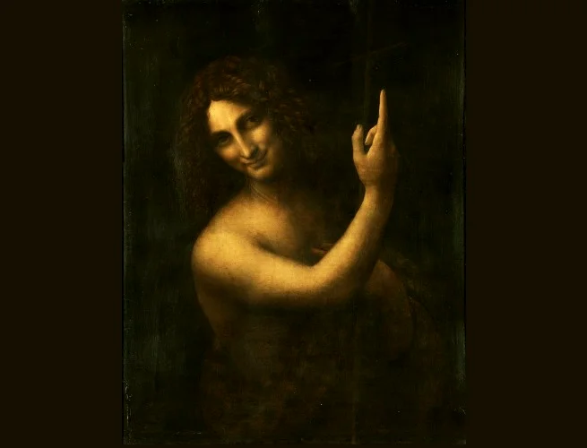
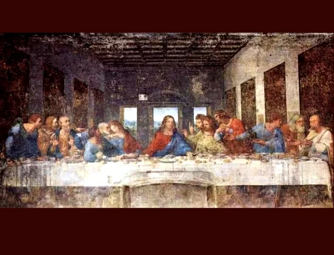
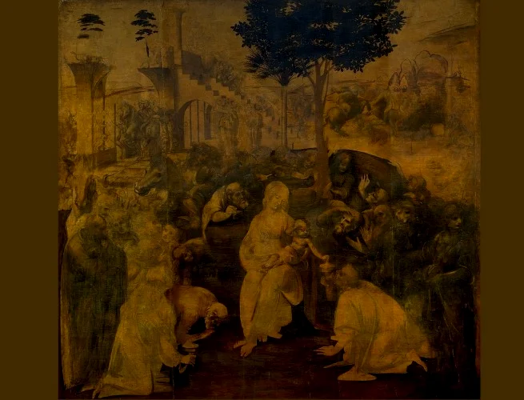
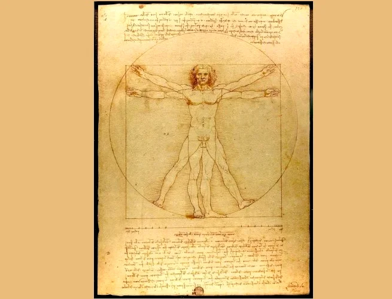

Principais Obras Artísticas de Leonardo Da Vinci
1. São João Batista
Época da criação: 1508-1509
Óleo sobre madeira
real : 69 cm × 57 cm
Onde está localizada? Museu do Louvre, Paris, França
2.Mona Lisa

Época da criação: 1503-1506
óleo sobre madeira de álamo
real : 77 cm × 53 cm
Onde está localizada? Museu do Louvre, Paris, França
3.A Última Ceia
Época da criação: 1495-1498
Têmpera e óleo sobre duas camadas de gesso aplicadas em estuque
real : 460 cm × 880 cm
Onde está localizada? Refeitório de Santa Maria delle Grazie, Milão, Itália
4.Adoração dos Magos
Época da criação: 1481-1482
Óleo sobre madeira
real : 246,4 cm × 243,8 cm
Onde está localizada? Galleria degli Uffizi, Florença, Itália
5.O Homem Vitruviano
Época da criação:1490
Lápis e tinta sobre papel
real :34 × 24
Onde está localizada? Gallerie dell'Accademia, Veneza, Itália